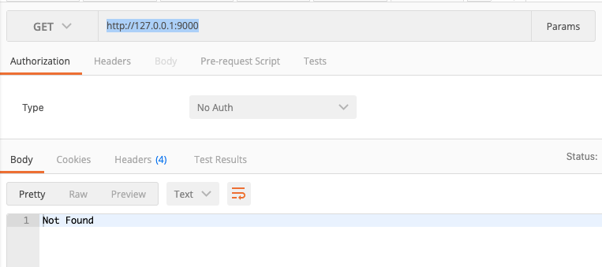

koa ctx.body写在异步里接口会返回404的问题
这篇文章发布于 2020/02/26，归类于 前端工程化
标签：
koa接口404，ctx.body写在异步操作里404
在前端mock上传的接口时，发现总是404，刚开始以为是代理的问题，后来单独写了个demo，发现如果ctx.body放在异步的回调，后端接收到请求了，但还是会返回404，下面来具体研究下

// 最简单的验证方法
setTimeout(() => {
ctx.body = {} // 只要是异步，前端就会返回404
}, 0)用koa写个简单的测试demo
demo如下，nodemon index.js后，我们用postman请求 http://127.0.0.1:9000 时，如果用setTimeout包裹，会返回404 Not Found，去掉setTimeout就可以正常返回 { msg: '成功'}
// index.js
const Koa = require('koa')
const app = new Koa()
app.use(ctx => {
setTimeout(() => {
ctx.body = {
msg: '成功'
}
}, 0)
})
app.listen(9000, () => {
console.log('server is start on 9000 port')
})解决方法
在处理文件上传时，我们需要接收完所有文件数据后才响应结果给前端，接收上传肯定是一个异步操作，怎么解决这个问题呢？
注意：不要把 ctx.body 写在异步操作里，异步操作封装成函数，调用时用await来等待，完成后再设置ctx.body, 来看一个demo
const Koa = require('koa')
const app = new Koa()
app.use(async ctx => {
await asyncOpt()
ctx.body = {
msg: '成功'
}
})
function asyncOpt() {
return new Promise(r => setTimeout(()=> r(), 2000))
}
app.listen(9000, () => {
console.log('server is start on 9000 port')
})实际应用
上面的例子中，两秒后会返回结果。如果可以把异步操作像demo中那样封装，就没问题。所以对于接收上传文件，我们可以这样处理
// 将文件数据接收，放到Promise里然后await，这样前端就不会404了
let data = await getUploadData(req)
ctx.body = {}
// 用 promise 封装一层
function getUploadData(req) {
return new Promise((resolve, reject) => {
let chunk = []
let size = 0
req.on('data', (data) => {
console.log('data', data)
chunk.push(data)
size += data.length
})
req.on('end', () => {
console.log('end')
const data = Buffer.concat(chunk, size)
resolve(data)
})
})
}